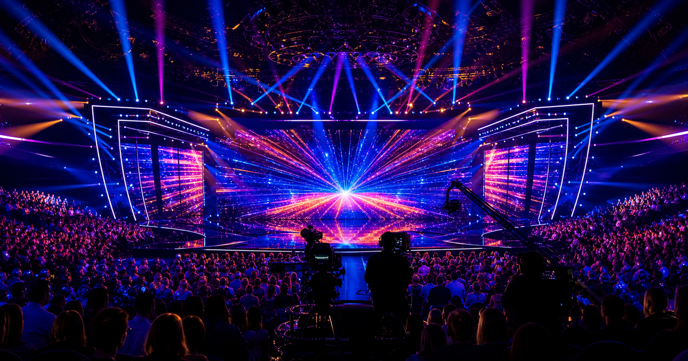
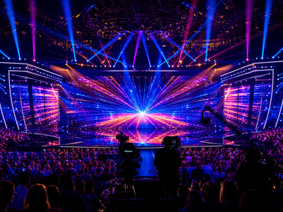

Song contest event guide
Eurovision Song Contest
The annual live music contest where broadcasters send one song, viewers argue about the voting, and one country leaves with the microphone trophy.
Use the year switcher for recent editions. The selected edition stays inside this framed sport view.

More song contestsInterested in more song contests?Explore related events, locations and calendar moments.
Eurovision Song Contest 2027 in Bulgaria
Eurovision Song Contest guide
Eurovision Song Contest belongs in the music, song contests, eurovision song contest collection on OneSliders. Use this page as the compact evergreen entry point: start with what the event is, then scan the current edition details, location cues, schedule context and links back into the wider topic. The page is kept short by design, but it should still give enough unique context to distinguish this event from nearby fixtures, annual editions and broader category listings.